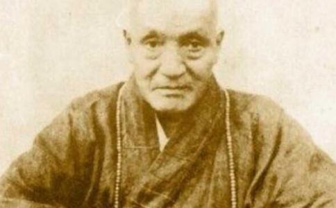

印光法师（1861～1940），即释印光，法名圣量，字印光，自称常惭愧僧，又因仰慕佛教净土宗开山祖师——当年在庐山修行的慧远大师，故又号继庐行者。大师俗姓赵，名丹桂，字绍伊，号子任。陕西郃阳（今合阳）孟庄乡赤城东村人。大师振兴佛教尤其是净土宗，居功至伟，是对中国近代佛教影响最深远的人物之一。大师在佛教徒中威望极高，与近代高僧虚云、太虚、谛闲等大师是均为好友，弘一大师更是拜其为师，其在当代净土宗信众中的地位至今无人能及。圆寂后被尊为净土宗第十三代祖师，因为大师的种种神迹，佛教徒深信大师是大势至菩萨化身（《印光大师永思集》中有相关记载）。
大师化人无数，最被人称道的是，无论是谁，只要写信请教，大师都回信指点迷津，由其回信集结而成的《印光大师文钞》，被认为是佛教徒尤其是净土宗信众的修行宝典。
法师是由儒而入佛的；他别号“常惭愧僧”。以此可以窥见他向佛后一生所为。他是从佛道而出，受惭愧心所驱的。一般人陷于重重的罪恶中，善根力非常薄弱。唯有惭愧的重善轻恶，能使人战胜罪恶，使善根显发而日趋于增进。释尊说：“惭愧是人类不同禽兽的地方。”印光法师一生无论为法为人，始终循着这种倾向光明的正觉。法师既自名常惭愧僧，身体力行潜修佛道，直指本心。做事但求无愧我心。本着对自己负责的态度。这样做的客观后果，却使众生受惠，独善其身收到了兼善天下的效果。倘若世间为人，皆照此行事，对自己的言行负责，即人间早已成为充满喜乐清净的福地，人皆可以成佛了。
法师的行动，身教胜于言教。他把自己数十年来参研佛法的心得体悟都融于日常的一言一行中。印光法师一生随遇而安，淡泊清苦，至老不变。他是北方人，喜欢吃馒头，每次吃饭只有一碗粗菜，吃完以后用馒头把菜碗擦净吃光，或者用开水汤洗饭碗。他住在上海太平寺时，有居士请他吃斋，他不去，再三请，他才嘱咐只上一盒馒头，一碗豆腐渣，居士答应照办，他才赴斋。在苏州报国寺时，有一次菜中用的酱油稍好点，他就提出批评。有一次，某居士拜访他，曾将半杯开水倒进痰盂里，也受到他的批评。他给人写信，过好的信纸都不用，都是用国产的毛太纸做信笺。有次写给别人的信，是用人供养水蜜桃的包皮纸。弟子们有时供养他的礼物，他不是推辞掉不接受，也就是转送给他人，或是交给库房，让大家一起一享受。他住的房间都是自己打扫，穿的衣服也都是自己洗，一直到79岁高龄还坚持这样做。有一次他在上海的太平寺，有一居士去拜访他，却见他在院子中自己洗衣服。在苏州报国寺时，真达和尚请他到灵岩山，已经替他备好了轿子，他却从上山到下山，始终拄杖步行，坚决不肯坐轿。法师一生都是如此，无论在何种情况下，都不摆一点架子。他自己就曾对人说过：“我不摆架子，也就不怕倒架子。”可见法师为人，有着很强的独立精神，决不肯徒受别人的恩惠，亦不肯以自己的存在成为别人的负担，超然于物外。
印光法师注重实干，不虚张，在情势紧急需要自己的时候毅然前行。1931年，震惊全国的“九·一八”事变爆发了，东边沦陷，全国民心激奋，纷纷要求抗日。1936年，中国佛教会理事长圆瑛法师与上海佛教界人士在上海举行护国息灾法会，请法师出关说法，号召全国佛教徒为抗日救国作出贡献。法师护国利生的心愿非常殷切，欣然允诺，并告诉不用汽车迎送，不请吃斋，不会客。圆瑛法师对此一一答应。法师以76岁高龄带一位侍者，自己来到上海，每日讲法两小时，听讲的人都非然欢喜地信受，讲经期满之日皈依的人达1000多人。法师听说抗战中绥远的灾情严重，把当时所收1000余人皈依求戒的香仪2900多元都全部捐出，并附上自己原存的1000多元，等法师讲经完毕回到苏州，众人在车站迎接，请法师上灵岩山上参观近年的景象，可是法师却先急着到报国寺把存折取出将赈款汇出。然后这才和众人一起登山观赏。1926年，长安经过兵灾以后，人民的生活非常艰苦，法师就将印行《文钞》的款项3000元，托国人速速汇往赈济。法师总急人所急，对社会有所助益。1935年，陕西省大旱，法师听到消息后，马上取出存折，令人速汇1000元。汇完以后，令人查帐，发现折中所存仅百元，而报国寺的一切需用，都靠这点钱了，法师对此也不介意。法师把自己的这些行为与保护佛法连在一起，把救助人的实际苦难视为到普渡众生。法师曾说：“救灾即是普渡众生，亦是保护佛法。”其言词中爱国爱民之情，是何等的恳切。
法师对于佛法的理解，绝不脱离世间而虚妄谈佛。他启示弟子的是从“人乘”直达佛乘的一条学佛路线。在他的《文钞》中有这样几句话：“敦伦尽分，闲邪存诫，诸恶莫诈，众善奉行，真为生死，发菩提心，以深信愿，持佛名号。”即是从人伦出发，在处理好上下左右关系的同时，尽自己的本分，把属于自己的那一份工作或责任做好。法师的话是极平易朴实而又见根本的。由于法师是由儒而入释的，所以，法师在用文钞教导在家弟子时，谈佛法而兼谈儒学。然这是出于谈论之方便，并非是混淆儒佛之间的界限。所以他说：“儒佛之本体，固无二致，儒佛之功夫，浅而论之，亦颇相同，深而论之，则天地悬殊。”又说：“儒佛二教，合之则双美，离之则两伤。”法师有鉴于我国自汉武帝“罢黜百家，独尊儒术”以后，自汉至清2000年来，都以儒学为主流。想要用佛法普度众生，非现身说法不可。正因为法师援儒入佛，他一以教化儒门弟子，一以维护佛教，苦心孤诣，非菩萨心肠莫能为。
法师勤修佛事，广著文章。1924年，法师就以“常惭”之名在《佛学丛名》上刊载文章，为读者叹服，法师的名字就是从那时开始渐为人知的。1917年，天津的一位居士将法师给友人的三封信印行，并题名《印光法师信稿》。1918年，该居士又将法师的文稿20多篇在北京印行，题名《印光法师文钞》。后加上文稿数十篇，合订成二册，法师对于佛法的见解遂流行于海内。由于法师的文章佛理深邃。文义典雅，深入浅出。易于理解，故人人争读。就连梁启超读了法师的文章也备加赞叹，谓“印光大师，文字大昧，真今日群盲之眼也。”法师一生致力于弘扬净土宗，他之于净土宗在全国的勃兴起到了非常重要的作用。法师第一次在上海弘扬净土是1918年，那时他正在扬州刻经院刻印《安士全书》；1919年，法师再次同高鹤年到上海，与简玉阶兄弟（南洋烟草公司创始人）及诸居士相见，法师详细解说净土法门，简氏兄弟和其他居士一起授发心供养千余元作为刊印经书的资助。后简氏兄弟还创办了净土道场——上海佛教净业社的社址。1922年，法师因校印经书一事，由普陀到上海，住在太平寺。各方人士来信皈依的很多。由于法师大量印行《安士全书》、《印光法师文钞》以及净土经论近百种，宣传净土，上海皈依他的人日益增多，净土宗从此在上海兴盛起来。1922年，上海世界佛教居士林成立，提倡净土的念佛法门。1926年，上海佛教净业社成立，并发行《居士林林刊》、《净业社月刊》。法师的净土宗负由此传播到全国各地，各地的居士林、净业社、念佛会、莲社等居士团体如雨后春笋，勃然兴起。1928年，由于在上海人事日繁，法师遂于1930年结束了在上海校印经书的事宜，于1930年2月离开了普陀山，到苏州报国寺闭关。走之前，将印行经书之事交给明道法师，1935年，明道法师去世。印此法师以75岁高龄之躯，自任主持流通之事。
法师在报国寺闭关期间，在佛课的余暇，重新刊行《净土十要》，增编《净土五经》，并修写了普陀、九华、五台、峨眉四大名山的山志。四大名山志均于1937年由弘化社出版发行。除此之外，他在闭关期间，刊行增广文钞的续编。